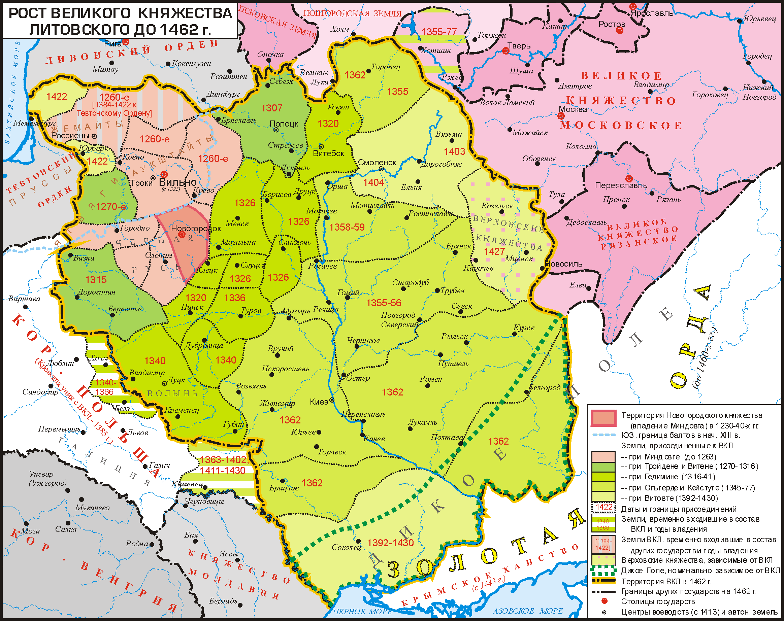

Эпоха ВКЛ
Эпоха ВКЛ на землях Беларуси
Великое Княжество Литовское (полное название с середины XV в. – Великое Княжество Литовское, Русское, Жемойтское; сокращ. ВКЛ) – феодальное государство в Восточной Европе,
существовавшее в XIII-XVIII вв. на территории современной Беларуси (полностью), Литвы (за исключением Клайпедского края), Украины (большая часть, до 1569 г.), России
(юго-западные земли, включая Смоленск, Брянск и Курск), Польши (Подляшье, до 1569 г.), Латвии (частично; после 1561 г.), Эстонии (частично; с 1561 по 1629 гг.)
и Молдавии (левобережная часть Приднестровья, до 1569 г.). Столица – г. Вильна (ныне Вильнюс, Литовская Республика). ВКЛ образовалось как многонациональное государство
в результате интеграции в XII-XIII вв. западных княжеств Древней Руси и восточнобалтских земель. Установление феодальных отношений на этих землях, угроза внешней агрессии
с востока со стороны татаро-монголов и с запада со стороны крестоносцев вызвало стремление к политической консолидации.ВКЛ возникло при князе Миндовге
(середина 1230-х гг. — 1263 г.), объединившем славянские и балтские земли Верхнего и Среднего Понеманья. Из политических соображений он принял католичество, а в 1253 г.
– титул короля. Значительно расширилось ВКЛ при следующих великих князьях, особенно при Гедимине (1316-1341 гг.) и Ольгерде (1345-1377 гг.).
Первые политические объединения на территории Беларуси (VI – XIII вв.)

Славяне на территорию современной Беларуси начали проникать в первые века нашей эры. За несколько столетий они расселились по всему региону, постепенно ассимилировав
балтские племена, проживавшие на этих землях. В VI-IX вв. у восточных славян формируются первые политические объединения – союзы племен. К IX в. относится первое летописное
упоминание про г.Полоцк и Полоцкое княжество, которое существовало на территории современной Витебской и северной части Минской области и господствовало в регионе до XIII в.
ВКЛ образовалось как многонациональное государство в результате интеграции в XII-XIII вв. западных княжеств Древней Руси и восточнобалтских земель. Установление феодальных
отношений на этих землях, угроза внешней агрессии с востока со стороны татаро-монголов и с запада со стороны крестоносцев вызвало стремление к политической консолидации.
ВКЛ возникло при князе Миндовге (середина 1230-х гг. — 1263 г.), объединившем славянские и балтские земли Верхнего и Среднего Понеманья. Из политических соображений он
принял католичество, а в 1253 г. – титул короля. Значительно расширилось ВКЛ при следующих великих князьях, особенно при Гедимине (1316-1341 гг.) и Ольгерде (1345-1377 гг.).
Постепенно в состав ВКЛ вошли все белорусские и большая часть украинских земель: в 1240-х гг. Понеманье, во 2-й половине XIII – начале XIV в. – полоцкие, витебские, менские,
берестейские и туровские, в 1340-1352 гг. волынские земли, в 1350-1360-я гг. Поднепровье, Мозырская и Брагинская волости, около 1362 г. Киевское княжество.
Политику расширения ВКЛ продолжали великие князья Ягайло (1377-1392 гг.) и Витовт (1392-1430 гг.). Белорусские земли включались в состав ВКЛ преимущественно путем
договоренностей с местными феодалами, заинтересованными в сильном государстве, способном защитить их от внешней агрессии, обеспечить благоприятные условия для хозяйства,
торговли.На белорусских и украинских землях ВКЛ был более высокий уровень развития феодальных отношений, чем на литовских (в современном понимании), поэтому их влияние
на все сферы жизни государства было преобладающим на протяжении всей истории ВКЛ.После Кревской унии 1385 г., которая предусматривала включение территории ВКЛ в состав
Польши и принятие литовским населением, исповедовавшим язычество, католицизма, православное население и феодалы белорусских и украинских земель начали терять свое
доминирующее значение. Великие князья начали поддерживать феодалов-католиков, раздавать им земли и должности. Агрессия со стороны Тевтонского Ордена, рост оппозиции
на белорусских и украинских землях политике центрального правительства стали почвой для союза ВКЛ с Польшей. Однако условия Кревской унии не удовлетворили многих феодалов
ВКЛ, не желавших мириться с утратой их государством суверенитета. Их борьба привела к заключению Островского соглашения 1392 г., которое гарантировало самостоятельность
ВКЛ, великим князем стал Витовт. Он укрепил центральную власть, присоединил к ВКЛ Смоленск, Вязьму, Верховские княжества в бассейне Верхней Оки, Жмудь и другие земли.
Формально ВКЛ возрождена Виленско-Радомской унией 1401 г. (как вассал Польши).
Карта ВКЛ до 1462г.
© Антипов Алексей Романович